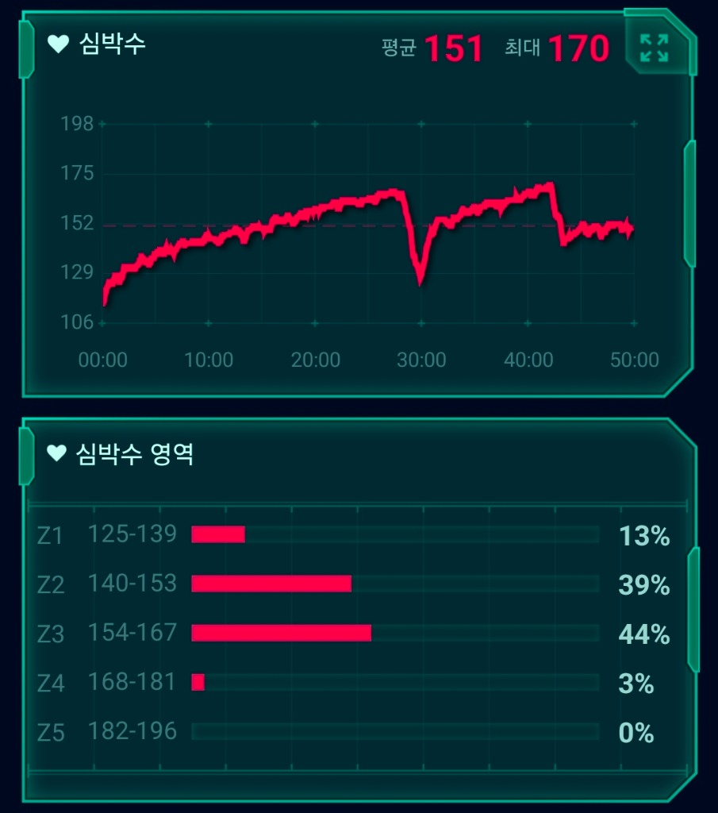

LT1·LT2와 심박존(Zone 1~5) 완벽 가이드: 초급·중급·고급 러너를 위한 최신 운동생리학과 심박 훈련 공식
- 과거 2000년대 마라톤에서 널리 쓰이던 "최대심박수 = 220 - 나이" 공식은 개인차가 ±15bpm 이상 발생하여 훈련 강도 설정에 치명적인 오차를 만듭니다.
- 현대 운동생리학의 핵심은 두 개의 역치, 즉 유산소 역치(LT1: ~2mmol/L, Zone 2 상한선)와 무산소/젖산 역치(LT2: ~4mmol/L, Zone 4)를 정확히 구분하는 것입니다.
- 고급 러너는 Zone 5(무산소 폭주)를 피하고, Zone 2(기초 심장용적)와 Zone 3~4(LT 경계)를 정밀하게 분할 타격하여 심폐 내구성을 극대화합니다.
1. 1970년대 Fox 공식(220-나이)의 한계와 현대 심박 훈련의 진화
과거 마라톤 동호인들이나 초보 러너들은 심박수를 계산할 때 흔히 220 - 나이 공식을 기준으로 삼았습니다.
예를 들어 40세 러너라면 최대심박수를 180bpm으로 두고, 그 60%인 108bpm을 가벼운 조깅 강도로 산출하는 방식이었습니다.
그러나 1971년 윌리엄 폭스(William Fox) 박사가 제안했던 이 경험적 공식은 실제 측정값이 아닌 소규모 집단의 대략적인 평균치에 불과했습니다. 스포츠 생리학 연구에 따르면 성인 간의 최대심박수 표준편차는 약 11~12bpm에 달합니다. 즉, 같은 40세라도 실제 최대심박수가 165bpm인 사람과 195bpm인 사람이 존재하는데, 이를 일률적으로 180bpm에 맞추면 한쪽은 과훈련(오버트레이닝)에 빠지고, 다른 한쪽은 자극 부족을 겪게 됩니다.
따라서 현대 스마트워치(가민, 코로스, 애플워치)와 최신 엘리트 훈련계는 고정된 공식 대신 혈중 젖산 농도 변곡점인 LT1과 LT2를 기준으로 5개 심박존을 재설정합니다.
2. 두 개의 결정적 전환점: 유산소 역치(LT1) vs 젖산 역치(LT2)
우리가 달리는 속도를 조금씩 올릴 때, 체내 대사는 계단식으로 급변하지 않고 점진적으로 변하지만 분명한 두 번의 생리학적 경계선을 통과합니다.
🧬 대사 전환의 3대 구역 (3-Zone Metabolic Model)
- Zone A (저강도 유산소 구역, LT1 미만): 주요 연료는 지방산(Fatty Acid)입니다. 젖산 생성량은 기저 수치(약 1.0~1.5 mmol/L)에 머물며, 호흡이 편안하여 문장 단위로 길게 대화가 가능합니다. 가민의 Zone 1 ~ Zone 2에 해당합니다.
- 변곡점 1: LT1 (Lactate Threshold 1, 유산소 역치): 혈중 젖산 농도가 기저치에서 처음으로 의미 있게 상승하기 시작하는 지점(통상 2.0 mmol/L 내외). 탄수화물 연소 비율이 급격히 증가하며, '완전히 편안한 조깅'에서 '조금씩 집중해야 하는 지속주'로 넘어가는 경계선입니다.
- Zone B (중강도 정상 상태 구역, LT1 ~ LT2 사이): 젖산이 활발히 생성되지만, 심장과 지근 섬유, 간(젖산 셔틀)이 이를 완벽히 재흡수하여 에너지로 산화시키는 최대 젖산 정상 상태(MLSS: Maximal Lactate Steady State) 구역입니다. 가민의 Zone 3(마라톤 템포 페이스)에 해당합니다.
- 변곡점 2: LT2 (Lactate Threshold 2, 젖산 역치 / 무산소 역치): 젖산 생성 속도가 인체의 젖산 청소 한계를 완전히 추월하는 지점(통상 4.0 mmol/L 내외). 혈액 산성화(H+ 이온 축적)가 폭발하며 근육 수축력이 급격히 저하됩니다. 통상 1시간 동안 전력으로 유지할 수 있는 한계 페이스(10km~하프 경기 속도)입니다.
- Zone C (고강도 무산소 구역, LT2 초과): 지속 불가능한 영역. 체류 가능 시간은 수 분~수십 초에 불과하며, 호흡이 가빠지고 가민의 Zone 4 상단 ~ Zone 5에 해당합니다.
3. 가민 5대 심박존과 LT1/LT2의 정확한 매핑 테이블
4. 🏃 동료 러너의 실전 기록: 9.18km 분할 심박 데이터를 관찰하며

▲ 9.18km 트레드밀 훈련 기록: 30분 지속 후 잠시 숨을 고르는 V자 드롭, 그리고 2차 달리기
💡 제 몸을 관찰하며 느낀 3가지 포인트
- Zone 5(무산소 영역)를 의식적으로 비워두기 (0%): 저 역시 달리기 초반에는 숨이 턱 끝까지 차올라야 제대로 달린 줄 알았습니다. 하지만 무리하게 Zone 5까지 밀어붙이면 며칠 동안 피로가 가시지 않더군요. 이번 훈련에서는 Zone 5를 0%로 두고, Zone 2(39%)와 Zone 3(44%) 사이에서 80% 이상을 머물도록 속도를 조절해 보았습니다. 이렇게 뛰고 나니 다음 날 관절이나 근육에 부담이 훨씬 덜했습니다.
- 30분 지점의 V자 드롭 (몸의 회복 반응 살피기): 1차 템포런(30분)을 마치고 속도를 늦췄을 때 심박수가 168bpm에서 120bpm대로 빠르게 내려오는 것을 확인했습니다. 달리기를 멈추거나 늦췄을 때 심박이 안정적으로 떨어지는 속도를 체크해보면, 오늘 내 심폐가 감당할 수 있는 수준이었는지 가늠해보는 좋은 기준이 됩니다.
- Zone 4(3%)는 살짝만 경험해보기: 최대 심박 170bpm은 2차 세트 막바지(42분 지점)에 잠깐 찍혔습니다. 젖산역치에 오래 머물며 몸을 혹사하기보다는, 그 직전 영역에서 충분히 머물다가 마지막에 살짝 자극만 주고 내려오는 방식이 저에게는 부상 없이 지속 가능한 방법이었습니다.
5. 러너 레벨별 참고해볼 만한 주간 심박존 가이드
권장 심박 비중: Zone 1~2 (85~90%) / Zone 3 (10~15%)
처음에는 심장과 모세혈관이 적응할 시간이 필요합니다. 숨이 너무 가쁘다면 부끄러워하지 말고 걷거나 속도를 늦춰 Zone 2의 편안함을 먼저 몸에 익혀보세요.
권장 심박 비중: Zone 2 (75%) / Zone 3 (15%) / Zone 4 (10%)
대부분의 거리는 편안한 조깅으로 채우고, 주 1회 정도 템포런(Zone 4)을 곁들여 몸이 젖산에 적응해나가는 감각을 조심스럽게 실험해보는 단계입니다.
권장 심박 비중: Zone 1~2 (80%) / Zone 3~4 (15%) / Zone 5 (5%)
기록을 목표로 하더라도 기초 볼륨의 80%는 낮은 심박으로 다져두어야 합니다. 역치 훈련도 무리한 올아웃보다는 정해진 목표 심박 안에서 절제하며 달리는 편이 안전합니다.
⚡ 내 기록에 딱 맞는 Zone 1~5 속도를 알고 싶다면?
RunAnalyz 종합 계산기에 최근 5km/10km 완주 시간과 심박수를 입력하면, 스포츠 의학 공식 기반의 4대 훈련 속도와 심박존을 1초 만에 자동 처방합니다.
⚡ 내 맞춤 심박수 & 페이스 무료 진단하기